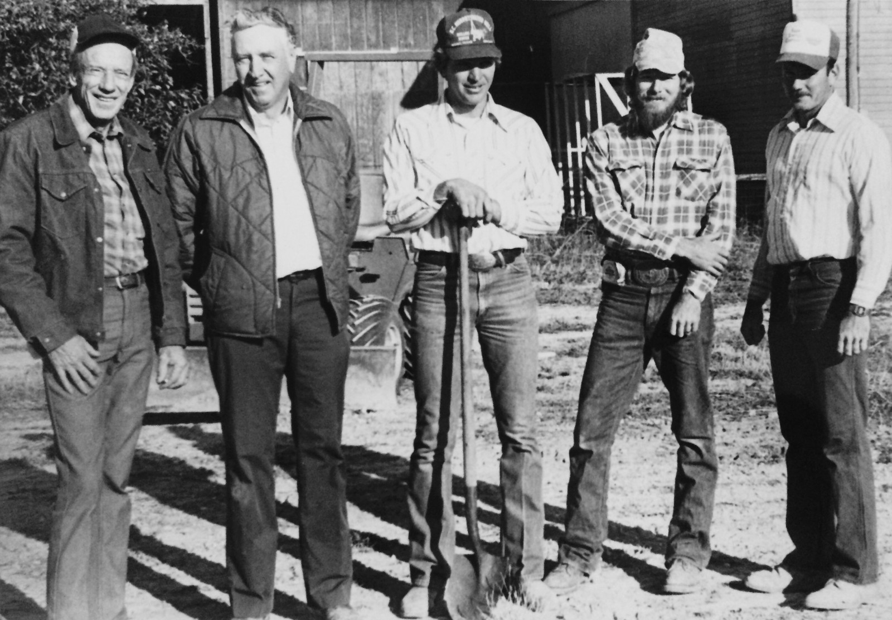

Our Company
In 1968, Joe Manning, Sr. began working as an independent plumber out of his garage. His goal was simple: to provide quality, dependable, and affordable plumbing and heating services to residental customers. If he did that, he knew his business would grow.
Today, Joe manning, Jr. is still committed to the same level of service and quality that made his father a household name in Albuquerque area. Along with our general plumbing services, we install and maintain heating and cooling systems, including solar thermal systems, and we offer residential and commercial maintenance management services.